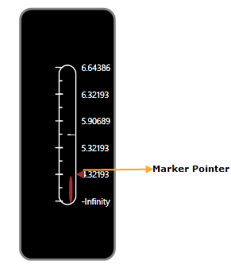

Essential Gauge Windows Phone provides pointers to show the value over the scale. You can customize pointers by using the PointerNeedleType property. The following are the types of pointers supported by the Linear Gauge.
· Marker
· Bar
 Note: For implementing the pointers, you must
already have the Scale in which you are going to add the pointers.
Note: For implementing the pointers, you must
already have the Scale in which you are going to add the pointers.
The following code example illustrates how to add pointers to the Linear Gauge.
|
[XAML]
<syncfusion:LinearGauge Height="450" Width="170" Orientation="Vertical" x:Name="LinearGauge1" RadiusX="20" RadiusY="20" BorderBrush="Gray" BorderThickness="4" OuterFrameBrush="Black"> <syncfusion:LinearGauge.Scales> <syncfusion:LinearScale Minimum="0" Maximum="100" Foreground="#7B7C7C" MajorIntervalValue="20" MinorIntervalValue="10" ScaleBarSize="30" ScaleBarLength="250" ShadowOffset="4" BorderBrush="White" BorderThickness="2" RadiusX="15" RadiusY="15"> <syncfusion:LinearScale.Ticks> <syncfusion:LabelTickSet Foreground="White" IsLogarithmic="True" LogBase="2" TickPlacement="Inside" DistanceFromScale="10" TickStyle="MajorTick"/> <syncfusion:MarkTickSet Background="#7B7C7C" TickHeight="6" TickWidth="2" DistanceFromScale="12" TickPlacement="Cross" TickShape="Rectangle" TickStyle="MinorTick" /> <syncfusion:MarkTickSet Background="white" Opacity="0.7" TickHeight="14" TickWidth="2" TickPlacement="Cross" TickShape="Rectangle" DistanceFromScale="15" TickStyle="MajorTick"/> </syncfusion:LinearScale.Ticks> <syncfusion:LinearScale.Pointers> <syncfusion:LinearMarkerPointer MarkerStyle="Triangle" Background="Brown" Height="15" Width="15" PointerLength="15" PointerWidth="15" Value="20" PointerPlacement="Outside"/> </syncfusion:LinearScale.Pointers> </syncfusion:LinearScale> </syncfusion:LinearGauge.Scales> </syncfusion:LinearGauge>
|
|
[C#]
LinearScale linearscale = new LinearScale(); linearscale.ScaleBarSize = 15; linearscale.ScaleBarLength = 250; linearscale.MajorIntervalValue = 20; linearscale.MinorIntervalValue = 10; linearscale.Minimum = 0; linearscale.Maximum = 100; linearscale.BorderBrush = new SolidColorBrush(Colors.Black); linearscale.BorderThickness = new Thickness(2);
LinearMarkerPointer linearmarkerpointer = new LinearMarkerPointer(); linearmarkerpointer.PointerLength = 20; linearmarkerpointer.PointerPlacement = ScalePlacement.Outside; linearmarkerpointer.PointerWidth = 10; linearmarkerpointer.Value = 20; linearmarkerpointer.Background = new SolidColorBrush(Colors.Brown); linearmarkerpointer.MarkerStyle = MarkerStyle.Triangle; linearscale.Pointers.Add(linearmarkerpointer);
LinearBarPointer linearbarpointer = new LinearBarPointer(); linearbarpointer.PointerWidth = 10; linearbarpointer.Background = new SolidColorBrush(Colors.Brown); linearbarpointer.Value = 20; linearscale.Pointers.Add(linearbarpointer); lineargauge.Scales.Add(linearscale); |

Figure 58: Triangle Marker Pointer added to the Linear Gauge